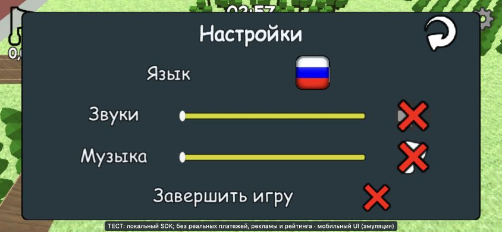

VODOVOROT_Hole_io · 8 ноября 2026 · Unity 6000.6.8f1 · WebGL
Оформленные границы карт, удобные настройки и понятные первые цели
Конечный пакет из пяти выбранных улучшений. Изменения сохранены в редактируемых сценах, общем префабе и ассетах. Проверки компонентов отделены от реального управления в браузере.
58 проверок компонентов44 проверки настроек24 вида границ
Что реализовано
1. Границы трёх карт
Город получил мощение, клумбы и дальние силуэты; сад — зелёную окантовку и деревья; замок — каменные бордюры, небольшие башенки и флаги. Нижний слой земли закрывает пустоты, все его соседние участки имеют одну высоту: устранён и тонкий синий шов на западной границе замка.
Четыре исходных городских полосы бетона и пол замка используют отдельные материалы мощения. Стены, коллайдеры и площадь перемещения сохранены.
2. Настройки в горизонтальном режиме
Существующие формы сохранены под экранным Canvas с безопасной областью и пропорциональными отступами. Полностью помещаются язык, звук, музыка, возврат и завершение раунда. Ссылки Text, слайдеров и UnityEvent сохранены; при повороте передаётся открытая форма, без двух активных окон.
3. Мягкое скрытие препятствий
Камера сохраняет проверку объёма персонажа. Препятствия уходят через короткий экранный дизеринг и плавнее возвращаются; при отключении восстанавливаются исходные материалы, property blocks и флаги видимости. В список добавлены 60 невысоких сегментов садовой ограды, закрывавших ободок на стартовой дорожке.
Настройка по умолчанию: уход 0,14 с, возврат 0,35 с, задержка возврата 0,15 с.
4. Доступные цели
Восемь сохранённых в префабе маркеров показывают ближайшие видимые объекты, которые действительно проходят текущий FallingObject.CanBeEatenBy. Нет отдельной приближённой таблицы размеров. Подсказки скрываются на паузе, после поглощения и завершения раунда. Обучение на RU/EN объясняет зелёные уголки.
5. Первая минута
Переставлены существующие небольшие предметы: 142 в городе, 79 в саду, 210 в замке. Значения, масштабы, количество съедобных объектов и пороги 26/163 сохранены. Убран старый перенос игрока сада в другую точку при выборе карты: запуск из меню теперь использует сохранённый спавн рядом с маршрутом.
Фактически наблюдавшиеся верхние границы времени: город — размеры 2/3 к 9/33 с; сад — к 14/44 с; замок — к 10/32 с. Между действиями включалась пауза; время читается с HUD раунда. Это проход разработчика, а не исследование поведения новых игроков.
Редактируемый стенд
Существующая Assets/Tests/RoundExperienceLab.unity использует настоящую игровую систему и отдельный беззвучный профиль. Семь ползунков: длительность, минимальные XP/монеты, задержка скрытия, уход/возврат и радиус подсветки. Есть сброс, перезапуск и сохранение настроек.
Проверяемый результат

WebGL, 844×390, RU: все элементы формы доступны. Также проверены 640×360 EN, 390×844 и 1280×720.
Реальный кадр WebGL с промежуточным дизерингом при движении к зданию.
Что именно проверено
58 проверок реальных компонентов: три выбранные карты, исходный спавн, количество объектов 11896/6057/7604, значения всех переставленных предметов, fit/growth, доступность, пауза, маркеры, промежуточные fade-состояния, разворот перехода, восстановление материалов/property blocks/culling. Это управляемые Editor-проверки, без заявления о ручном прохождении.
44 проверки настроек: обе формы, геометрия подписей, попадание pointer events в настоящие слайдеры, синхронизация, закрытие. Браузер отдельно подтверждает реальное нажатие, перевод RU/EN и поворот экрана.
24 контролируемых вида: четыре угла × размеры 1/3 × три карты. Проверяется кадрирование и узкий критерий чисто синего clear-color по краю. Отдельный тонкий шов был найден визуально и исправлен; один пиксельный критерий не заменяет визуальный осмотр.
Сохранность игровой площади: исходные Transform/BoxCollider стен и переопределения позы стен/предков во всех картах совпадают с checkpoint.
Сборки после изменений C# прошли компиляцию. Инструмент авторинга дополнительно компилировался без выполнения. Все новые сцены/геометрия сохраняются до Play Mode; статический мир не собирается при запуске.
Состояние передачи: исходное сохранение, Editor, звук и временные настройки. Результаты проверки GitHub приведены в сообщении о завершении.
Тайминги города получены в build_ba63464c80be, замка — в build_42778e72d265, сада после исправления спавна — в build_ac12cf163742. Последующие изменения затрагивают землю границ и список садовых препятствий. Финальный билд отдельно проверен на трёх картах. Базовый городской проход не был строгим сравнением первых 60 секунд; процент улучшения темпа по нему не заявляется.
Инструменты авторинга/проверки находятся в Tools/Unity/. Полный манифест переставленных объектов — opening-authoring.json. Тестовый стенд исключён из production build.
Пределы проверки
Проверена локальная WebGL-сборка с изолированным SDK-адаптером. Реальные покупки, цены IAP, аккаунт Яндекса и рейтинг реальных пользователей этим проходом не подтверждаются. Физический телефон и аппаратные safe-area вырезы не проверялись; мобильная форма проверена в эмуляции браузера.
На стандартном DPR 2 замечено отдельное наложение текста на экране результатов (кадр); при явном DPR 1 результат корректен. Экран результатов не входит в этот пакет настроек. Это оставшийся дефект, требующий отдельной адаптации.
В браузерном логе — 18 ожидаемых отказов локального рейтинга и 2 прежних предупреждения BoxCollider у Double Door замка; они присутствуют и в базовых логах. Новых неожиданных записей не найдено: классификация.
Полная личная сверка опубликована в предыдущем чеклисте из 19 активных ID: 4 выполнено, 4 частично, 8 отсутствует, 3 неприменимо. Этот конечный пакет не меняет критерии базы и не выдаёт новые продуктовые гипотезы за доказанные. CFP-006,008,009,024 остаются частичными: понятность косметики, реальные IAP, разнообразие первых минут на новых игроках и реальный недельный рейтинг требуют соответствующих проверок. Старый полный отчёт и аудит сохранён.
10 следующих улучшений
Предложения за пределами реализованных пяти пунктов; это не обещание роста метрик и не список автоматически обязательных функций.
Исправить экран результатов при DPR 2 и повторить адаптацию на реальных телефонах.
Повысить контраст маркеров на светлой траве и добавить вариант, различимый без опоры только на зелёный цвет.
Для слишком крупных целей показывать краткий сигнал требуемого размера при попытке поглощения.
Разнообразить цели второй половины раунда: читаемые группы предметов и новые возможности после старших размеров.
Добавить заметные ориентиры и различимые районы карт, чтобы легче планировать маршрут после старта.
Сделать стартовые группы предметов естественнее визуально, сохранив проверенные расстояния и темп роста.
Проверить джойстик, удержание ускорения, мёртвую зону и размер зон касания на физических устройствах.
Проверить настоящие каталог/валюту IAP, отмену/восстановление покупки и рейтинг в тестовом окружении платформы.
Измерить WebGL на слабом устройстве и оптимизировать наиболее дорогие материалы, меши и загрузку по профилю.
Основа выбора: studioigor, yandex-games-ui, game-meta-designer, game-playtest, unity-change-impact и личный checklist-for-publishing. Новые метамеханики сначала требуют отдельного контракта, а продуктовый эффект — измерения.
Локальные ссылки и файлы отчёта проверены. Встроенный браузер запретил открытие file://; визуальный просмотр самого HTML в нём не выполнен. Игровой WebGL проверен отдельно по localhost.
GitHub
Ветка www. Контрольная точка до правок: 0aa78ad. Итоговый SHA и подтверждение remote/API указаны в сообщении о завершении. Пользовательское сохранение, IDE, кэш и посторонняя работа исключены из коммита.